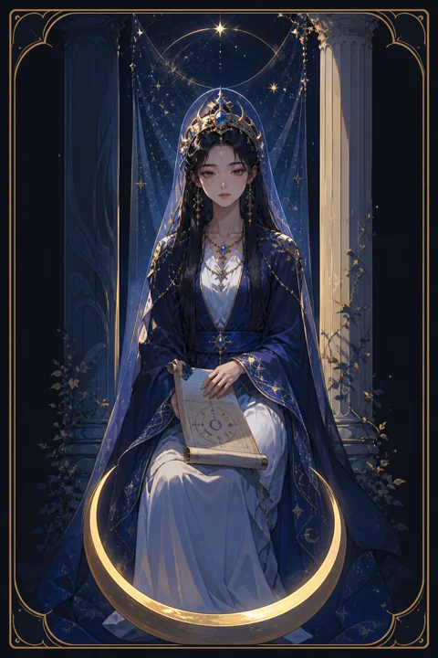

II 여사제 카드 — 고요한 직관과 숨은 지혜
여사제 카드 한눈에 보기
여사제 카드 상징 읽기

동네보살의 카드 그림은 전통 라이더–웨이트 덱의 뜻을 새 그림으로 옮긴 것입니다. 아래 상징 설명은 전통 덱의 그림을 기준으로 합니다.
여사제는 검은 기둥과 흰 기둥 사이에 앉아 있습니다. 두 기둥은 밝음과 어둠, 드러난 것과 감춰진 것처럼 서로 반대되는 힘을 뜻하고, 그 사이의 자리는 어느 쪽에도 치우치지 않는 균형을 말합니다.
무릎 위의 두루마리는 일부만 보이도록 옷자락에 반쯤 가려져 있습니다. 모든 지식이 한꺼번에 공개되지 않으며, 준비된 사람에게만 조금씩 펼쳐진다는 의미입니다.
발치의 초승달은 감정과 무의식, 차오르고 기우는 마음의 흐름을 상징합니다. 뒤편 휘장에 그려진 석류는 풍요와 신비를 담고 있고, 휘장 너머로 살짝 보이는 물은 겉으로 드러나지 않은 깊은 마음의 세계를 암시합니다.
여사제가 입은 푸른 옷은 물결처럼 흘러내려 바닥에 닿는데, 이는 고요하지만 깊게 흐르는 직관의 물줄기를 뜻합니다. 가슴에 걸린 십자는 서로 다른 힘이 한가운데에서 균형을 이루는 모습입니다. 머리의 달 모양 관은 차고 기우는 달처럼 앎에도 때가 있다는 사실을 일러 줍니다.
여사제 카드 정방향 뜻
정방향 여사제는 바깥의 소음을 줄이고 안에서 올라오는 목소리를 들으라는 카드입니다. 논리로는 설명되지 않지만 이상하게 마음에 걸리는 느낌이 있다면 그 감각이 중요한 단서일 수 있습니다.
이 시기에는 서둘러 결론을 내거나 모든 것을 말로 풀어내기보다 지켜보는 태도가 더 많은 것을 알려 줍니다. 상대가 말하지 않은 부분, 문서에 적히지 않은 사정처럼 겉으로 보이지 않는 요소가 결과를 좌우합니다.
공부, 연구, 명상, 글쓰기처럼 혼자 깊이 파고드는 일에도 잘 맞습니다. 모든 질문에 곧바로 답하지 않아도 괜찮습니다. 조용히 기다리는 동안 흩어져 있던 조각이 맞춰지고, 때가 되면 답은 저절로 선명해집니다. 꿈이나 우연히 스친 말 한마디가 의외의 힌트가 될 수 있으니 짧게라도 기록해 두세요. 겉으로 조용한 사람이 실은 가장 많은 것을 알고 있는 법입니다.
여사제 카드 역방향 뜻
역방향 여사제는 마음속에서 울리던 경고를 애써 외면하고 있는 상태를 비춥니다. 남의 의견이나 겉으로 보이는 조건에만 기대어 결정하다 보면 나중에 왜 그때 느낌을 믿지 않았을까 후회할 수 있습니다.
감춰 두었던 비밀이나 말하지 않았던 사정이 드러나 주변이 술렁이는 흐름으로 나타나기도 합니다. 반대로 자신이 알고 있는 것을 지나치게 숨겨 관계에 벽을 만들고 있을 가능성도 있습니다.
이 카드가 나쁜 소식만 뜻하는 것은 아닙니다. 드러난 진실은 처음엔 불편해도 오해를 걷어 내는 계기가 됩니다. 잠시 혼자 있는 시간을 만들어 내가 진짜로 느끼는 것이 무엇인지 차분히 적어 보세요. 흐려진 감각은 쉬어 주면 돌아옵니다. 반대로 지나친 상상으로 없는 의미까지 읽어 내며 불안을 키우고 있지는 않은지도 살펴보세요. 직감과 걱정은 비슷해 보여도 다른 목소리입니다.
연애에서 여사제 카드
솔로라면 조용히 마음이 가는 사람이 있을 수 있지만 겉으로는 쉽게 드러나지 않는 시기입니다. 적극적으로 다가가기보다 상대를 천천히 알아 가며 신뢰를 쌓는 방식이 어울립니다. 직감이 이 사람은 아니라고 말한다면 그 느낌을 가볍게 넘기지 마세요.
연애 중이라면 말로 표현되지 않는 감정이 오가고 있습니다. 상대가 무언가를 속으로 삭이고 있을 수 있는데, 캐묻거나 확인을 강요하면 오히려 마음의 문이 닫힙니다. 편안한 분위기에서 먼저 들어 주는 태도를 보이면 상대가 스스로 이야기를 꺼낼 가능성이 커집니다. 서로의 비밀을 존중하는 거리도 사랑의 한 모습입니다. 솔로인 경우 북적이는 자리보다 조용한 공간에서 천천히 대화를 나누는 만남이 인연에 더 잘 맞습니다. 연애 중이라면 상대의 표정과 행동에 담긴 작은 신호를 읽어 주는 섬세함이 서운함이 쌓이기 전에 관계를 지켜 줍니다.
재회·속마음 질문에서 여사제 카드
재회 질문에 여사제가 나오면 상대의 마음이 겉으로 드러나지 않은 채 안에 머물러 있다는 뜻입니다. 여전히 당신을 떠올리고 있을 수 있지만 그것을 표현할지는 아직 스스로도 정하지 못한 상태에 가깝습니다. 지금 확답을 요구하면 상대는 더 깊이 숨어 버립니다. 시간을 두고 조용히 기다리면서 당신 자신의 진짜 마음을 먼저 확인하는 것이 좋습니다. 상대의 소식을 이리저리 알아보거나 주변 사람을 통해 마음을 떠보려는 시도는 오히려 경계심을 키울 수 있습니다. 대신 연락이 왔을 때 편안하게 받아 줄 수 있도록 마음의 자리를 비워 두세요. 이 카드에서 재회의 열쇠는 서두름이 아니라 적절한 때를 알아보는 감각입니다.
일·금전에서 여사제 카드
일에서는 드러나지 않은 정보가 판단의 열쇠가 됩니다. 계약서의 작은 조항, 회의에서 오가지 않은 속사정, 숫자 뒤에 숨은 흐름을 꼼꼼히 살펴보세요. 조건이 좋아 보여도 어딘가 마음이 불편하다면 결정을 조금 미루는 편이 안전합니다.
연구, 분석, 상담, 기획처럼 깊이 생각하고 관찰하는 직무에서 능력이 잘 발휘됩니다. 금전 면에서는 크게 움직이기보다 정보를 모으고 흐름을 지켜보는 시기로 읽습니다. 남들이 들뜰 때 한 걸음 물러서서 기록을 살피는 차분함이 손실을 막아 줍니다. 중요한 내용은 아직 널리 알리지 않는 편이 좋습니다. 새 동료나 거래처를 만났다면 첫인상만으로 판단하지 말고 조금 더 지켜보는 편이 정확합니다. 공개되지 않은 채용이나 내부 소식이 조용히 기회를 가져올 수도 있습니다.
여사제 카드는 예일까 아니오일까
아직 드러나지 않은 정보가 남아 있다는 카드라 지금 당장은 예나 아니오를 단정하기 어렵습니다. 조금 더 기다리며 직감을 믿으라는 뜻이고, 역방향이면 숨은 사정이 드러난 뒤에 답이 달라질 수 있음을 알려 줍니다.
자주 묻는 질문
여사제 카드 역방향은 나쁜 뜻인가요?
역방향 여사제는 마음속에서 울리던 경고를 애써 외면하고 있는 상태를 비춥니다. 남의 의견이나 겉으로 보이는 조건에만 기대어 결정하다 보면 나중에 왜 그때 느낌을 믿지 않았을까 후회할 수 있습니다.
여사제 카드가 연애 질문에 나오면요?
솔로라면 조용히 마음이 가는 사람이 있을 수 있지만 겉으로는 쉽게 드러나지 않는 시기입니다. 적극적으로 다가가기보다 상대를 천천히 알아 가며 신뢰를 쌓는 방식이 어울립니다. 직감이 이 사람은 아니라고 말한다면 그 느낌을 가볍게 넘기지 마세요.
타로 카드는 어떻게 뽑나요?
타로 카드 페이지에서 카드를 섞으면 메이저 아르카나 22장이 펼쳐집니다. 마음이 가는 세 장을 고르면 과거·현재·미래 자리에 놓이고, 한 장씩 뒤집어 자리와 방향에 맞는 풀이를 읽습니다. 정방향과 역방향은 섞는 순간 정해집니다.